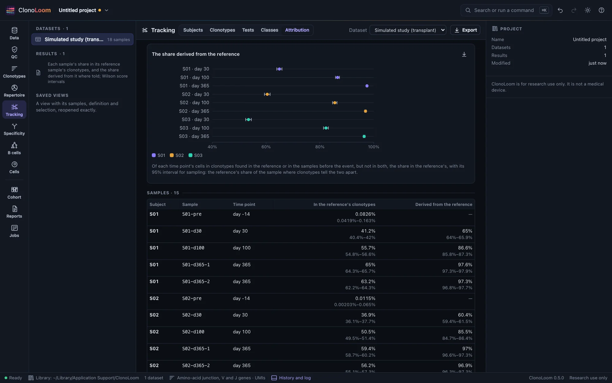
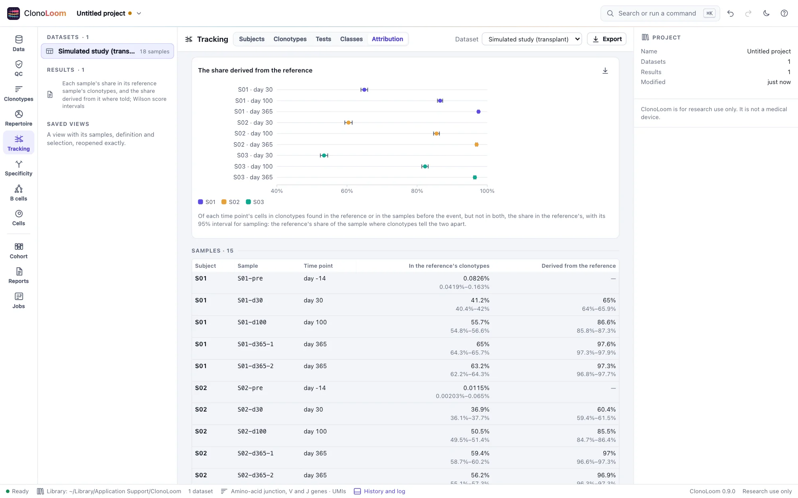

Attribution to a reference
The Tracking view's Attribution part measures each sample of a subject against its reference sample, such as an infusion product or a donor's blood, and says what the measures can and cannot tell.
Two measures


Mark each subject's reference sample first (Subjects and time points), then open Tracking › Attribution. For each sample and each time point (the samples at one time pooled), with a 95% interval for sampling (Wilson's):
- The share in the reference's clonotypes: the sample's cells or molecules in the clonotypes the reference sample holds. It counts the subject's own cells where the reference holds their clonotypes, and misses the reference's clonotypes its sample did not catch.
- The share derived from the reference, where the subject has samples before the reference event and the reference shares few clonotypes with them (at most a quarter of its cells): among the sample's cells in clonotypes found in the reference or in the samples before, but not in both, the share in the reference's. Clonotypes either side missed, or both hold, say nothing of where a cell came from, and are left out.
A donor and an infusion product
- A donor shares few clonotypes with the recipient, so the share derived from it is the donor's share of the blood. On the simulated transplant study, it was within 0.065 of the truth at every sample, about 60% at day 30, 85% at day 100 and 97% at day 365.
- An infusion product made from the patient's own blood holds the blood's largest clonotypes. On the simulated CAR-T study, about 60% of the blood was in the product's clonotypes before the infusion, and three quarters of the product's cells were in clonotypes found before it. Neither measure tells the infused cells apart from the patient's own, so the share derived from the product is not given, and the view says why. Compare each sample with the share before the infusion, or follow the clonotypes that changed (Classes across time points).
The share in the reference's clonotypes was within 0.023 of the share the truth expects in the clonotypes the reference sample holds, on both studies. Its interval is for sampling alone: with the studies' variation between blood samples, it held that truth in about half the samples. It ran 0.17 to 0.28 below the share in all the reference's clonotypes, which its sample misses some of.
Using the result
The plots save as figures. Export writes every sample's and time point's measures, with their counts and intervals, as CSV. The methods paragraph says how they were made. Scripts use attribute_samples (Remote control).